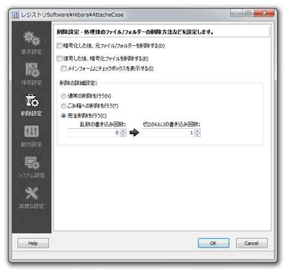

アタッシェケースで暗号/復号化した際に、元ファイルを削除するかどうか、またその削除方法についての設定を行えます。

チェックすると、処理を行った後に、ファイルを削除します。具体的な削除方法については、以下の項目のいずれかを選択します。
アタッシェケースの独自機能である「完全削除」を行わず、通常のファイルと同じく削除します。 ただし、Windowsの「ごみ箱」への削除ではありません。 ややこしいですが、Windowsで言うところの完全削除となります。ご注意ください。
チェックを入れると、メインウィンドウに「削除」のチェックボックスが表示されます。 ファイルを暗号/復号化するときに、削除するかどうかを選択できます。
Windowsのごみ箱への通常削除を行います。 ただし、メッセージでの問い合わせは行いませんので、即座に、ごみ箱行きとなります（^^;
アタッシェケース独自の「完全削除」を行います。ファイルを暗号化した際に、 市販のユーティリティソフトなどによって、元ファイルを復活されないように削除することができます。 「完全」の度合い（これもおかしな言い方ですが…（^^;））は、以下で設定することができます。
ファイルを乱数（でたらめな数値）で、埋め尽くして上書きします。 それを何度繰り返すかを指定できます。0にすると行いません。
乱数を書き込んだ後に、ゼロで埋め尽くして上書きします。 それを何度繰り返すかを指定できます。0にすると行いません。
Copyright© 2012 M.Hibara, All rights Reserved.